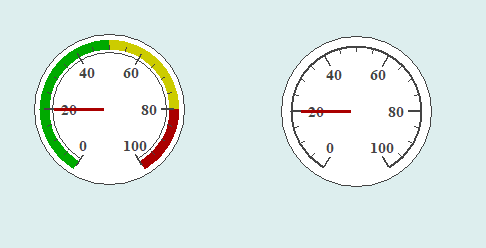

表盘控件主要用于指示某个参数的值，如温度、压力等，其图形显示效果如下：

在Python程序GUI界面中创建一个表盘控件的命令为:
hl=dr.DRGauge(win,x,y,w,h,cb,cf1,cf2,cf3,tet6,fontsize,min,max,initvalue,Gaugetype)
其中hl是创建时用户设定的变量名。表盘控件有2个属性函数，可用于设定和获取表盘的当前值。
hl.setValueSingle(v)
v=hl.getValueSingle()
表盘控件是从Tkinter的Canvas控件继承而来，因此必要时也可以通过Tkinter_Canvas控件的属性和方法来对其进行装饰。
更多有关Tkinter_Canvas控件的详细用法请参阅Tkinter文献。
.